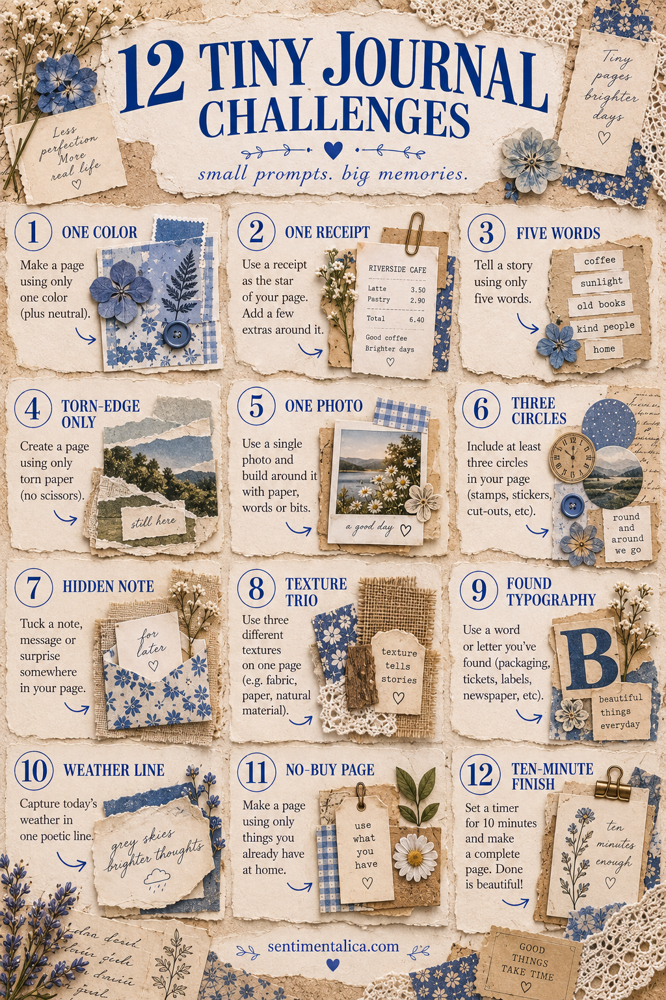
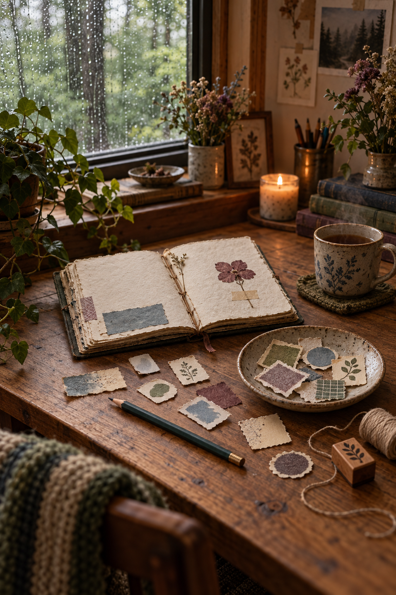

Creative block often grows when the task is too large. “Make a beautiful journal spread” asks for decisions about color, meaning, layout and materials all at once. A tiny challenge gives your hands one clear job.
Choose one prompt below and stop when it is complete. You are not required to turn it into a finished page. The small result can stand alone, become a cluster later or simply prove that you showed up.
Twelve five-minute prompts
1. Make a three-scrap stack
Choose one plain scrap, one patterned scrap and one fragment with an image. Overlap them until each remains partly visible. Attach them with one staple or stitch.
2. Find five shades of one color
Search packaging, magazines, old paper and fabric for five versions of blue, brown, pink or green. Arrange them from light to dark.
3. Journal around one word
Write the word you need today—perhaps quiet, begin or enough. Add only marks, lines and textures that support its feeling.
4. Create a pocket for one secret
Fold a small rectangle in half, glue two sides and slip in a private sentence. Decorate only the outside.
5. Tear a landscape
Use three horizontal paper strips for sky, distance and ground. No drawing is required. Let torn edges become the horizon.
6. Use the nearest paper
Reach for the closest safe paper item: an envelope, receipt, tea wrapper or paper bag. Tear one piece from it and make that piece the starting point.
7. Frame a tiny detail
Cut a small window in plain paper and move it over an image until one detail feels interesting. Glue the frame there.
8. Make a texture ladder
Arrange four materials from smooth to rough: copy paper, book paper, fabric and corrugated card, for example. Let your fingers choose the order.
9. Repeat one shape
Cut or draw the same simple shape five times. Change its size or material, then arrange the shapes in a loose path across the page.
10. Save today’s smallest thing
Attach a tiny piece from your day—a produce sticker, thread, paper label or fallen leaf—and write where it came from.
11. Cover what you dislike
Choose an unfinished page that bothers you. Cover only one area with a calm piece of paper. Stop before redesigning the whole spread.
12. End with one kind sentence
Make the simplest background you can, then write one sentence to your future self. It can be practical, forgiving or funny.

Turn the list into a reusable ritual
Write the challenge numbers on twelve blank scraps and keep them in a small dish. When you feel stuck, draw one without negotiating. Set a five-minute timer and keep your supply choice narrow: one container of scraps, one adhesive and one pen.
If a prompt creates momentum, continue. If it does not, the challenge still counts as finished. The purpose is to lower the threshold for making, not to disguise another demanding project.

Small creative acts accumulate. A color strip becomes a border, a pocket holds tomorrow’s note, and a three-scrap stack becomes the anchor for a later page. On a foggy day, five gentle minutes are enough.